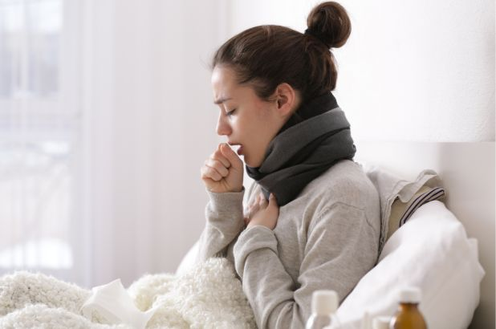

Coronavirus disease (COVID-19) is an infectious disease caused by a newly discovered coronavirus.
Most people infected with the COVID-19 virus will experience mild to moderate respiratory illness and recover without requiring special treatment. Older people, and those with underlying medical problems like cardiovascular disease, diabetes, chronic respiratory disease, and cancer are more likely to develop serious illness.
The best way to prevent and slow down transmission is be well informed about the COVID-19 virus, the disease it causes and how it spreads. Protect yourself and others from infection by washing your hands or using an alcohol based rub frequently and not touching your face.
The COVID-19 virus spreads primarily through droplets of saliva or discharge from the nose when an infected person coughs or sneezes, so it’s important that you also practice respiratory etiquette (for example, by coughing into a flexed elbow).
At this time, there are no specific vaccines or treatments for COVID-19. However, there are many ongoing clinical trials evaluating potential treatments. WHO will continue to provide updated information as soon as clinical findings become available.
Self-care
If you feel sick you should rest, drink plenty of fluid, and eat nutritious food. Stay in a separate room from other family members, and use a dedicated bathroom if possible. Clean and disinfect frequently touched surfaces.
Everyone should keep a healthy lifestyle at home. Maintain a healthy diet, sleep, stay active, and make social contact with loved ones through the phone or internet. Children need extra love and attention from adults during difficult times. Keep to regular routines and schedules as much as possible.
It is normal to feel sad, stressed, or confused during a crisis. Talking to people you trust, such as friends and family, can help. If you feel overwhelmed, talk to a health worker or counsellor.
For More queries :
The Coronavirus COVID-19 is affecting 213 countries and territories around the world and 2 international coveyances.The List of countries and territories and their continential regional classification is based on the United Nations Geoscheme.
More about Worldmeter's COVID-19 data
| Fever | Dry Cough  | Tiredness |
|---|
Seek immediate medical attention if you have serious symptoms. Always call before visiting your doctor or health facility.
People with mild symptoms who are otherwise healthy should manage their symptoms at home.
On average it takes 5–6 days from when someone is infected with the virus for symptoms to show, however it can take up to 14 days.
Protect yourself and others around you by knowing the facts and taking appropriate precautions. Follow advice provided by your local public health agency.
To prevent the spread of COVID-19 :
Avoiding unneeded visitis to medical facilities allows healthcare systems to operate more effectively,therefore protecting you and others.
No country knows the total number of people infected with COVID-19. All we know is the infection status of those who have been tested. All those who have a lab-confirmed infection are counted as confirmed cases.
This means that the counts of confirmed cases depend on how much a country actually tests. Without testing there is no data.
Testing is our window onto the pandemic and how it is spreading. Without data on who is infected by the virus we have no way of understanding the pandemic. Without this data we can not know which countries are doing well, and which are just underreporting cases and deaths.
To interpret any data on confirmed cases we need to know how much testing for COVID-19 the country actually does.
If you think you have been exposed to novel coronavirus (COVID-19), and have developed any symptoms (cough, fever or difficulty breathing), call the Govt. of India helpline 1075 or the